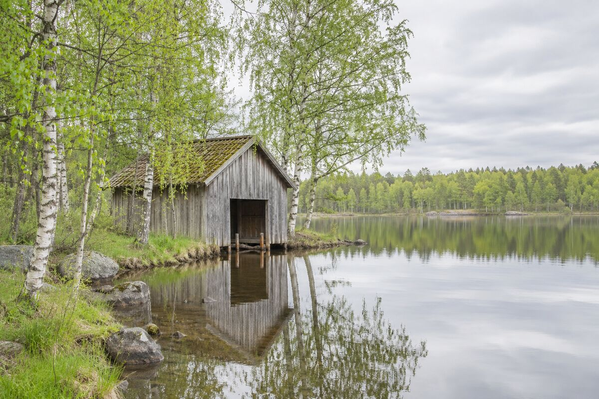

The first mile is always the hardest, and not because of the hills. It takes that long to stop checking the time, to stop thinking about where the day is meant to end, and to notice that the sea has been changing colour every few minutes since you set out.
By the second headland the mist had lifted off the water, and the lighthouse I had been walking towards for an hour appeared, small and white and much further away than it had any right to be. A farmer moving sheep along the lane told me it was “a good morning’s walk, if you don’t stop.” I stopped a great deal.
Nobody walks this coast to arrive somewhere. You walk it to find out how slowly you can bear to go.
The route follows an old drovers’ path for most of its length, dipping down to fishing coves and climbing back up again in a rhythm that soon feels like breathing. There are three places to buy food in forty miles, and one of them is an honesty box.

On the second day the path turns inland for a while, past a lake so still that the boathouse on its shore seemed to be built twice, once in wood and once in water.